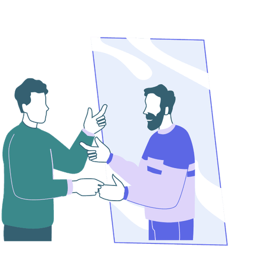

Mit der Academy erhaltet ihr im Business-Plan praxisnahe Lernmodule rund um Facilitation und wirksame Transformation.
Gemeinsam mit 9 Spaces zeigt Plan International Deutschland, wie wertebasiertes Arbeiten Orientierung gibt – nach innen wie nach außen.

Dieses Tool setzt da an, wo viele Konflikte beginnen und auch scheitern: beim Perspektivwechsel. Es hilft dabei, Konflikte schneller und konstruktiver zu lösen.
Manche Konflikte können wir nur schwer in Worte fassen. Unser Tool hilft dabei, gemeinsam zu verstehen, worum es wirklich geht.
Ein Tool, das dir dabei hilft, zu reflektieren, wie du kommunizierst
Wie mitfühlend und ehrlich seid ihr, wenn ihr euch Feedback gebt? Dieses Tool hilft euch dabei, eure Feedback-Kultur zu verbessern.